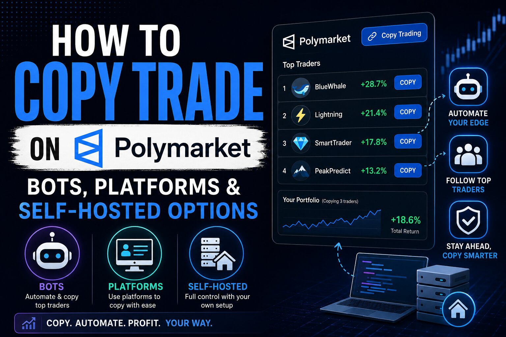

How to Copy Trade on Polymarket: Bots, Platforms & Self-Hosted Options

The short answer
Copy trading on Polymarket means picking one or more wallets you want to follow — usually names near the top of the leaderboard, or addresses you've tracked yourself — and having a piece of software mirror whatever they do automatically, instead of you refreshing a wallet page and placing the same trade by hand thirty seconds too late. There's no built-in "copy" button on Polymarket itself. Every copy trading setup, whether it's a script you run on a home server or a polished web dashboard, works the same underlying way: watch a wallet's on-chain activity, detect a new trade the moment it lands, and fire a matching order from your own wallet through Polymarket's CLOB (central limit order book) API. The differences between tools are really differences in how that pipeline is built, how fast it reacts, and how much control you hand over.
How the mechanics actually work
Every copy trading setup, from a weekend hobby script to a funded platform, is built around the same three-stage loop. First, monitoring: the tool watches one or more trader wallets, either by polling Polymarket's API on an interval or by holding an open WebSocket connection to Polymarket's real-time data stream so new fills show up within a second or two instead of minutes. Second, sizing: once a trade is detected, the tool decides how big your version of it should be — a fixed percentage of the leader's size, a flat dollar amount regardless of what they traded, or an adaptive scale that shrinks your exposure on the leader's larger, riskier bets. Third, execution: your side of the trade gets submitted through the CLOB API using your own wallet and your own USDC balance, ideally within seconds of the original fill, since Polymarket prices — especially on fast-moving political, sports, and crypto-price markets — can move meaningfully in the time it takes a human to react.
The "non-custodial" claim you'll see on almost every copy trading tool refers to that last step: your private key stays with you, trades execute from your own wallet, and the tool never actually holds your funds. That's a meaningfully different trust model from an exchange-style copy trading product where you deposit into someone else's account, but it also means the tool needs your key or a delegated signer to place orders on your behalf — which is exactly where the real risk in this category lives, and something worth sitting with before connecting anything.
The three ways people actually do this
Broadly, copy trading on Polymarket splits into three approaches, and they trade off convenience against control in opposite directions.
Self-hosted, open-source bots. You clone a repo, drop your wallet's private key and a list of addresses to follow into a config file, and run the bot yourself — on your laptop, a VPS, or a small cloud instance. You get full visibility into the code and full control of your key, but you're also responsible for uptime, security, and understanding what the code is actually doing before you fund the wallet it uses.
Hosted, no-code platforms. A web dashboard where you connect a wallet, browse or search for traders to follow, set a copy ratio and risk limits through a UI, and the platform's own infrastructure handles monitoring and execution in the background. No coding or server management required, but you're trusting a third party's infrastructure, uptime, and (depending on the platform's architecture) sometimes a delegated signing key.
Telegram bots and manual signal-following. Lighter-weight tools, often free or cheap, that either alert you when a followed wallet trades so you can act manually, or execute automatically through a bot running inside Telegram. Fastest to start, but manual versions reintroduce the reaction-time problem copy trading exists to solve, and automated versions still require trusting whoever operates the bot.
Self-hosted: running your own bot
If you'd rather run the code yourself than hand a key to a hosted platform, there's an active open-source ecosystem of Polymarket copy trading bots on GitHub, mostly built in Python, Node.js, or Rust. They share a common shape — a monitor process that watches target wallets via Polymarket's WebSocket feed, a config file where you set which addresses to follow and how aggressively to size your copies, and an executor that places the mirrored order through the CLOB API — but they differ in language, dependencies, and how far along they are.
A few examples currently on GitHub give a sense of the range: Polymarket-Copy-Trade and Polymarket-Copy-Trader are lighter, Python-based projects built around proportional position sizing and a simple config file of wallets to track. polymarket-copy-trading-bot (CoinMLabs) is a Rust implementation aimed at low-latency execution, with WebSocket-based monitoring and several configurable sizing strategies — fixed, percentage, and adaptive — plus basic risk controls like daily volume caps. Polymarket-Copy-Trade-Bot and polymarket-copy-trading-bot (snipeRun) follow a similar pattern with their own take on config structure and supported markets.
Running any of these yourself means putting your wallet's private key into a local .env file and keeping a process alive around the clock, so a few habits matter regardless of which repo you pick: use a dedicated wallet funded only with what you're willing to actively trade, never your main holdings; read through the code — or have someone who can — before pointing it at a funded wallet, since you're trusting whoever wrote it with direct trade execution logic; and start with small position caps while you confirm the bot behaves the way its config claims it will. Open-source also means quality varies a lot from repo to repo — some are maintained and battle-tested, others are thin wrappers thrown together to promote a paid product, so treat "it's on GitHub" as a starting point for review, not a guarantee of safety.
Hosted platforms: the no-code route
The other end of the spectrum is a growing set of hosted copy trading products — sites like PolyCopyTrade, Polycopy, PolyGun, and several others — that package the same monitor-size-execute pipeline behind a web dashboard. You connect a wallet, browse a leaderboard of traders with visible track records, set a copy ratio (say 0.1x to 1x of the leader's size) and basic risk controls like a per-trade cap or daily loss limit, and the platform runs the monitoring and execution infrastructure so you don't have to host anything yourself. Most market themselves as non-custodial, meaning trades still execute through your own wallet rather than a pooled account they control — though the exact architecture (a browser extension signing each trade versus a delegated key held by the platform) varies by product, and that distinction is worth reading the fine print on before connecting funds, since it determines exactly how much trust you're extending.
The tradeoff versus self-hosting is straightforward: less setup, no server to maintain, and often a nicer interface for discovering which wallets are worth following in the first place — in exchange for depending on a company's uptime, fee structure, and security practices instead of your own. As with the open-source options, this is a fast-moving, largely unregulated space with new entrants appearing constantly, so the usual due diligence applies: check how long the platform has actually operated, whether its non-custodial claim is architecturally real or just marketing language, and how transparent it is about fees before moving meaningful money through it.
Picking who to follow
A copy trading tool is only as good as the wallet it's copying — automating a losing strategy just loses money faster. A few things are worth checking on any trader before following them: total realized profit and loss over a long enough window to smooth out lucky streaks, not just a headline return number from one good week; position sizing relative to their bankroll, since a wallet betting big on one outcome can look great until the one time it doesn't; how concentrated their activity is in a single market category (a wallet that's only ever traded crypto-price 15-minute markets tells you little about how they'd handle an election market); and how much liquidity they typically trade into, since copying a wallet that moves size in thin markets can mean your mirrored order fills at a noticeably worse price than theirs did.
What to check before you connect a wallet
A few risks apply no matter which route you take. Copying is never instant — there's always some delay between the leader's fill and yours, and on fast-moving or thin markets that gap can mean you enter at a worse price than the trade you're copying, or occasionally miss the fill entirely. Past performance is exactly that — a wallet with a strong track record can still be on a losing streak the week you start following it, and prediction markets in particular can see a trader's edge disappear once a market resolves the way the crowd expected all along. And every setup involves some degree of key exposure: a self-hosted bot needs your private key sitting in a config file on whatever machine runs it, and a hosted platform needs either wallet-level signing permission per trade or a delegated key it holds on your behalf — so in both cases, using a wallet funded only with money you're prepared to actively risk, rather than your main holdings, is the single most useful habit to build before turning anything on.
Disclaimer: This post is for informational purposes only and is not financial or investment advice. Copy trading involves real financial risk, including the possibility of losing your full deposit, and third-party bots and platforms carry additional smart-contract, custody, and operational risk beyond ordinary trading. Review any code or platform independently, and only risk money you can afford to lose. Links to third-party tools are provided for reference and are not endorsements.